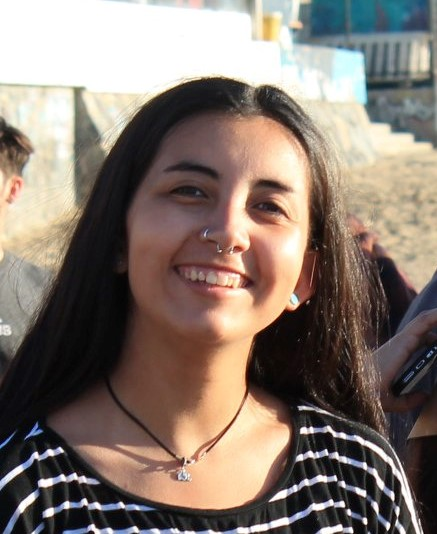

CURRICULUM VITAE |
|||||
|---|---|---|---|---|---|
Datos Personales |
|||||
|
 |
|||||
| ANTONIA ESCUDERO SAGREDO | |||||
| Domicilio | Viana 1635, Viña del Mar | ||||
| RUT | 19.814.435-5 | ||||
| Fecha de Nacimienta | 3 de Enero de 1998 | ||||
| Telefono | +56979692184 | ||||
| antoniaescuderos@gmail.com | |||||
Formación Académica |
|||||
| Básica | Colegio Almondale | ||||
| Superior | Estudiante de Diseño PUCV | ||||
Ramos optativos cursados |
|||||
| Primer año | |||||
| Segundo año | |||||
| Tercer año | |||||
Proyectos |
|||||
| Proyecto 1 | Brindis 90 años PUCV | ||||
| Portabocado para el brindis de celebración por los 90 años de la PUCV. | |||||
| Proyecto 2 | Brindis Expositivo | ||||
| Brindis expositivo | |||||
| Proyecto 3 | Proyecto de emprendimiento | ||||
| Proyecto de buscador de libros usados | |||||